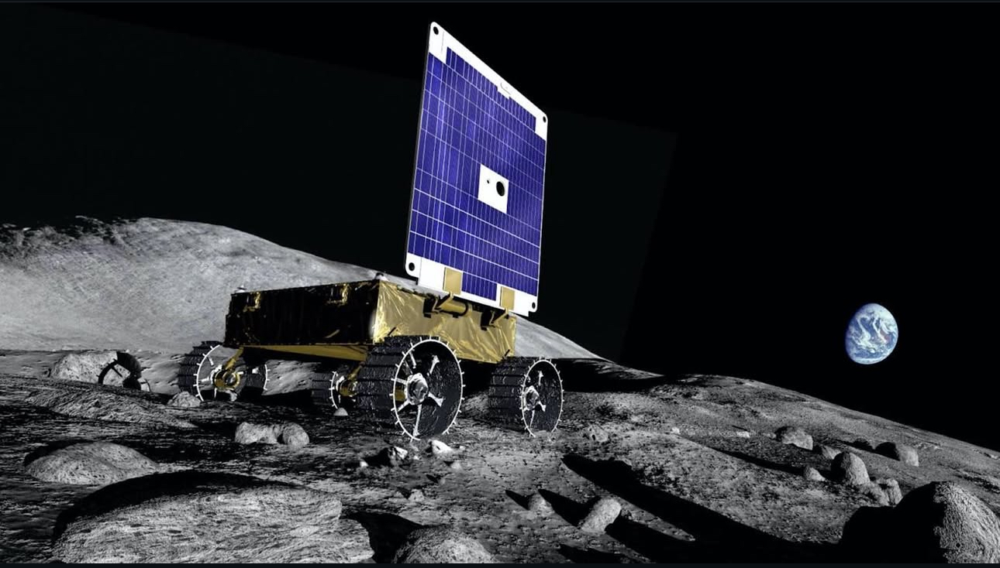

Roboticist.
Explorer.
Ph.D. Candidate at Carnegie Mellon building robots that move intelligently — from centimeter-scale walkers to lunar rovers.
 📸 Chad Isaiah Studios
📸 Chad Isaiah Studios
Scroll
Ph.D. Candidate at Carnegie Mellon building robots that move intelligently — from centimeter-scale walkers to lunar rovers.
📸 Chad Isaiah Studios
I'm a third-year Ph.D. candidate in Mechanical Engineering at Carnegie Mellon, working in the Robomechanics Lab on design optimization, legged locomotion, and bipedal dynamics across length scales.
I earned my B.S.E. from Princeton University in Mechanical & Aerospace Engineering with a certificate in Robotics & Intelligent Systems. My work spans multimodal locomotion, legged robots, and space technologies.
When I'm not deep in CAD models, I enjoy creative writing, hand-drawn 2D animation, learning new languages, hiking, and photography.



From lunar rovers to Starship, contributing to systems that push the boundaries of engineering.
Led mechanical design for the first rover to autonomously search for subsurface water ice at the lunar South Pole. Performed FEA modal and structural analyses in SolidWorks.
Designed 13 qualification experiments for a mission-critical harness on the Mars Sample Return mission. Conducted tolerance stack-up analyses.
Redesigned flight power and data harnesses. Simplified major satellite harnesses, reducing costs by over $2 million.
Worked on hydraulics for Raptor engines and flap systems in the AFT section of the orbital Starship.
Simulated autonomous trash-collecting Jackal robot using ROS and Stanford's iGibson.
Designed a crewed Mars mission — habitat, water recycling, cost analysis. Presented at Johnson Space Center.
Across robotics, controls, machine learning, aerospace, and mechanical design.
Designed a self-stabilizing penguin-inspired bipedal robot (54 cm tall, 2.29 kg) with ellipsoidal feet and open-loop sinusoidal control. Achieved faster walking on low-friction surfaces (0.165 m/s), demonstrating that morphological design improves locomotion robustness. Five Dynamixel-actuated joints drive crank-shaft leg extension and torso roll.
Research on how geometric scaling affects bipedal locomotion. Contributing to the Zippy platform — world's smallest self-contained bipedal robot (3.6 cm) — achieving 10 leg-lengths/second using quasi-passive dynamic walking with a single actuator.

Implemented Extended Kalman Filter SLAM for simultaneous localization and mapping in Webots. Built state estimation with landmark detection.
Designed Linear Quadratic Regulator controllers for optimal trajectory tracking. Derived linearized dynamics and computed gain matrices for minimum-cost control.
Implemented MPC for constrained path planning with obstacle avoidance. Formulated receding-horizon optimization with input constraints and dynamic feasibility.

Autonomous trash-collecting robot using ROS & iGibson at the Princeton IRoM Lab.

Biologically-inspired assistive device for accessibility applications.
View →
Analyzed a card trick through combinatorics, developing pseudocode to algorithmically describe its mechanics.

Trained a GAN from scratch in PyTorch to generate realistic MNIST-style digits. Implemented generator/discriminator with training stabilization.

Built a Variational Autoencoder to learn latent airfoil representations. Sampled novel, physically plausible airfoil profiles.

Applied GANs to airfoil generation, producing diverse aerodynamic profiles through adversarial training on engineering datasets.
Implemented recurrent and LSTM architectures for sequence prediction. Explored vanishing gradients, gating, and beam search decoding.
Designed CNNs with batch normalization, dropout, and residual connections from scratch in PyTorch.
Implemented self-attention and transformer architectures for sequence-to-sequence tasks with positional encoding.

Applied ML to structural topology optimization, predicting material distributions under loading with stress-field visualization.
Implemented SVMs with different kernels and decision trees. Compared one-vs-one and one-vs-rest multi-class strategies.
Applied PCA, normalization, log transforms, and clustering for pattern discovery in high-dimensional engineering data.
Built feedforward networks from scratch — forward/backward passes, activation functions, and gradient descent optimization.
First autonomous rover for subsurface water ice at the lunar South Pole. FEA structural analysis and mechanical design lead.

Rotating detonation engine feasibility for aerospace propulsion.
View →
Crewed Mars mission for 7 astronauts — habitat, water recycling, emergency modules. Presented at JSC.
View →Space mission trajectory & operations plan for a Lagrange point destination.
View →Orbital mechanics and spacecraft design near the radiation belts.
View →
Designed and evaluated deployable fin mechanisms inspired by flying fish for multimodal locomotion — exploring how biological deployment informs robots transitioning between aquatic and aerial modes.
View →
Multi-mechanism energy transfer machine as a playable game board.
View →Carnegie Mellon — Ph.D., Mechanical Engineering
Robomechanics Lab · 2024–Present
Princeton — B.S.E., MAE + Robotics Certificate
BAMLab · IRoM-Lab · 2019–2023
Open to conversations about robotics, space, research, or collaboration.